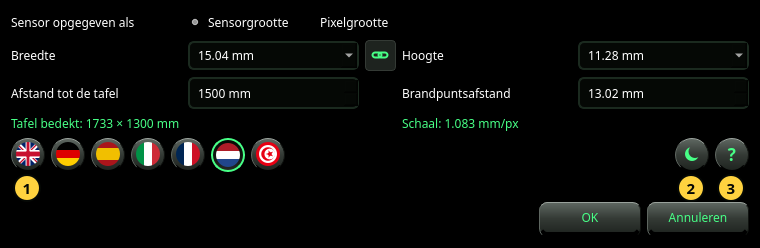

Instellen
De camera die de schaal geeft, de taal, het thema en de handleiding.
Instellen opent het venster Instellen. Het bevat wat de foto alleen niet kan zeggen: hoe ver de camera van de tafel is en, als de foto het niet vermeldt, het objectief en de sensor. Het kiest ook de taal en het thema, en opent deze handleiding.


De camera
- Sensor opgegeven als — hoe u de sensor beschrijft: met zijn Sensorgrootte (breedte × hoogte in mm) of met zijn Pixelgrootte (breedte × hoogte van één pixel in µm). Neem Sensorgrootte, tenzij u weet dat de foto de volle resolutie van de sensor heeft.
- Breedte en Hoogte — de grootte van de sensor, of die van één pixel. Kies een item uit de lijst of typ een getal. In de modus Sensorgrootte noemt de lijst gangbare sensorformaten (1/2.3″, 1″, APS-C, full frame en andere); er een kiezen zet ook zijn hoogte.
- De ketting ertussen — aan volgt de hoogte de breedte (een vierkante pixel of een vierkante sensor). Hij gaat vanzelf uit als een benoemde sensor een andere hoogte heeft.
- Afstand tot de tafel — van de camera tot het tafelblad, in mm. Meet hem: elke millimeter telt (zie Naslag).
- Brandpuntsafstand — de brandpuntsafstand van het objectief in mm, zoals op het objectief gedrukt of door de camera getoond. Neem de echte brandpuntsafstand, niet het kleinbeeldequivalent.
Onder de velden toont het venster in groen wat deze waarden opleveren:
- Tafel bedekt — het deel van de tafel dat de foto toont, in mm.
- Schaal — de grootte van één pixel op de tafel, in mm/px. Twee getallen (bijvoorbeeld 0.578 × 0.646 mm/px) betekenen dat de pixels niet vierkant zijn.
Een resultaat dat de grootte van de foto nodig heeft, luidt — (heeft een foto nodig) tot er in het venster een foto getoond wordt.
De ronde toetsen
- De vlaggen — de taal. Een vlag verandert het venster meteen, zodat u het kunt lezen; het hele programma volgt pas na OK. Arabisch wordt van rechts naar links geschreven.
- Het thema — donkere of lichte panelen. Net als de taal wordt het in het venster getoond en met OK toegepast.
- Het ? — opent deze handleiding in een eigen venster, in de taal van het venster.
OK bewaart alles. Wordt er een foto getoond en is de camera veranderd, dan wordt hij meteen opnieuw geanalyseerd. Annuleren of Esc verandert niets, ook niet de taal die u bekeek.